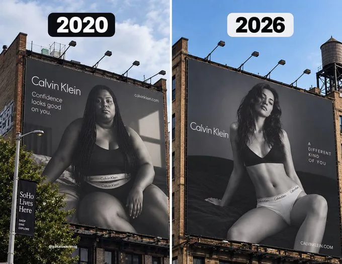

???:"좆같이 생겼노 안삼"
정작 좆같은건 본인 몸일텐데 ㅋ
위고비 마운자로 유행하더니 모델도 맞았나봄~
비만 치료제는 피부도 표백 시킬 수 있다, 메모
역시 위고비 바이럴이었네 개새끼들
정상화
2020은 캘빈 클레임
저걸보고 누가사냐..
이게 옳게된 시대지
마운자로 덕분이네요
왼쪽은 생긴것도 생긴건데 표정이…
ㄹㅇ 하기싫은거 억지로 찍은 느낌
당당한 이미지로라도 표현하든가 저게 뭔가싶네
똥싸고 본인손으로 똥도 못닦을것같은 년을 모델로 쓰면 그 회사물건을 사고싶겠냐.. 으...
왜 닦겠음? 색 비슷해서 냅둬도 모르는데
왼쪽 문구는 confidence인데 표정은 영..ㅋㅋ
이제야 정상화가..
광기의시대2018~2023까지 진짜 전세계가 미투부터 코로나 pc 돌아있엇음
AI같은데
암내 존나심할것같다
죽어서 바꾼거임?
지나고보니 흐름이었구나 싶다 한번 똥통에 빠져야 똥통인줄 아는듯
명륜진사갈비 재료같은 년들이 사라져서 편안~
아허바웃 버거 픔 맥도날드 ~ 소 라지
얼마나 큰지 보러 왔지 데콜 빅아취~
왼쪽 체형의 사람도 왼쪽 광고 보면 좆같아서 안 사지